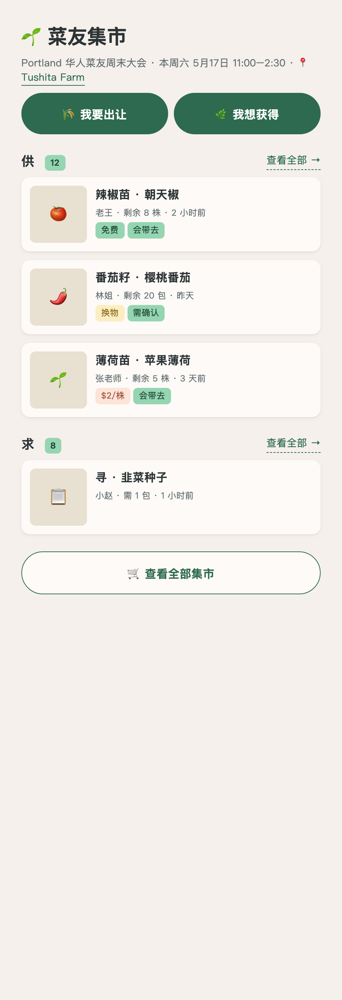
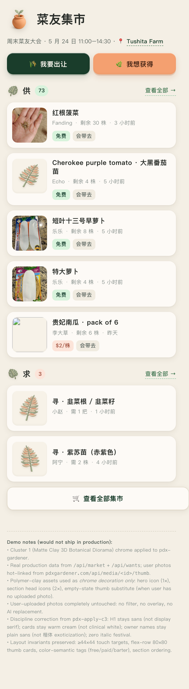
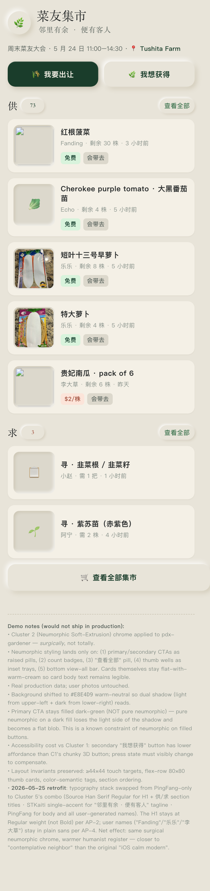
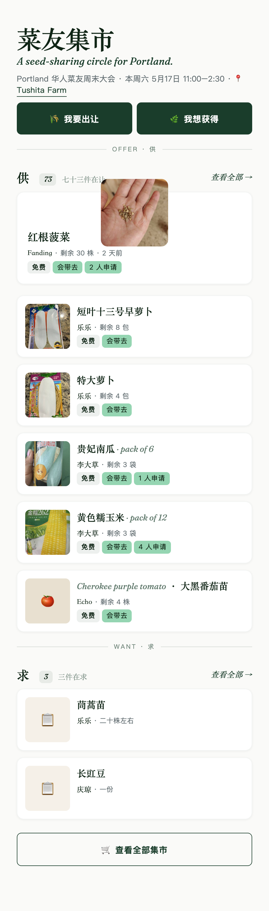
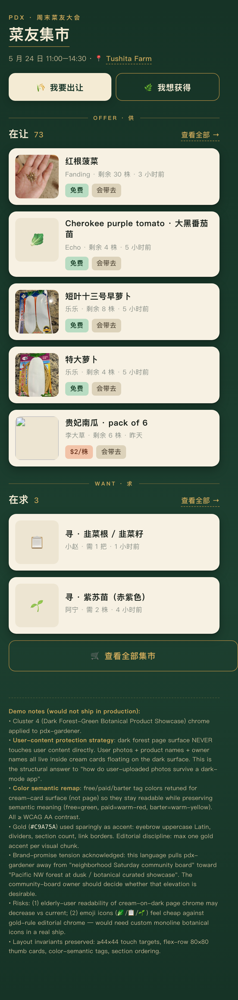
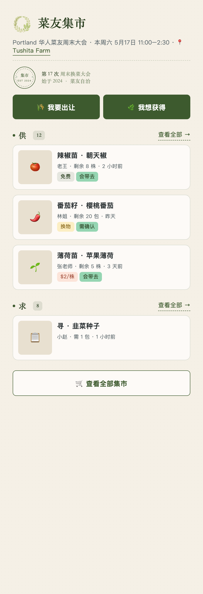

本地预览 · 真实生产数据 · designlang-vision validation 套件

原 pdx-gardener 首页
Sans Bold H1 · 暖米卡片 · emoji 缩略图 · 绿色 pill CTA — neighborhood community board feel

Matte Clay 3D Botanical Diorama (full chrome, distance 1)
Polymer-clay 装饰 3 处（hero / section head / 空状态）· 暖米卡片保留 · 软糯 dual shadow — 最贴近 pdx 原品牌的细化

Neumorphic Soft-Extrusion (surgical, distance 1)
Neumorphic 只用在 CTA/count/thumb-well/view-all 五处 · 卡片本体平面保留可读性 · inset thumb-well 是亮点

Editorial Botanical Commerce (full attempted, distance 3)
Display 宋体 + italic festival × 6 + photo-overflow + 楷体 owner names — 调性错配；保留作 anti-pattern 反例

Dark Forest-Green Showcase (structural cream-island, distance 3)
Cream 卡片在 dark forest page 上 float · 金色 accent 节制 · 用户照片永不直接接触深色背景 — Portland lookbook 调

Artisanal Flat Parchment Café (full, distance 1)
Parchment 纸纹 + dashed 橄榄绿边框 + 思源宋体 restraint — 跟 C1 同属"温和升级"派系
把 C2 chrome 推到 pdx-gardener 其他 4 个核心页面 ·
字体改用 C5 组合（思源宋体 Regular + STKaiti accent + PingFang body）·
shared _shared.css